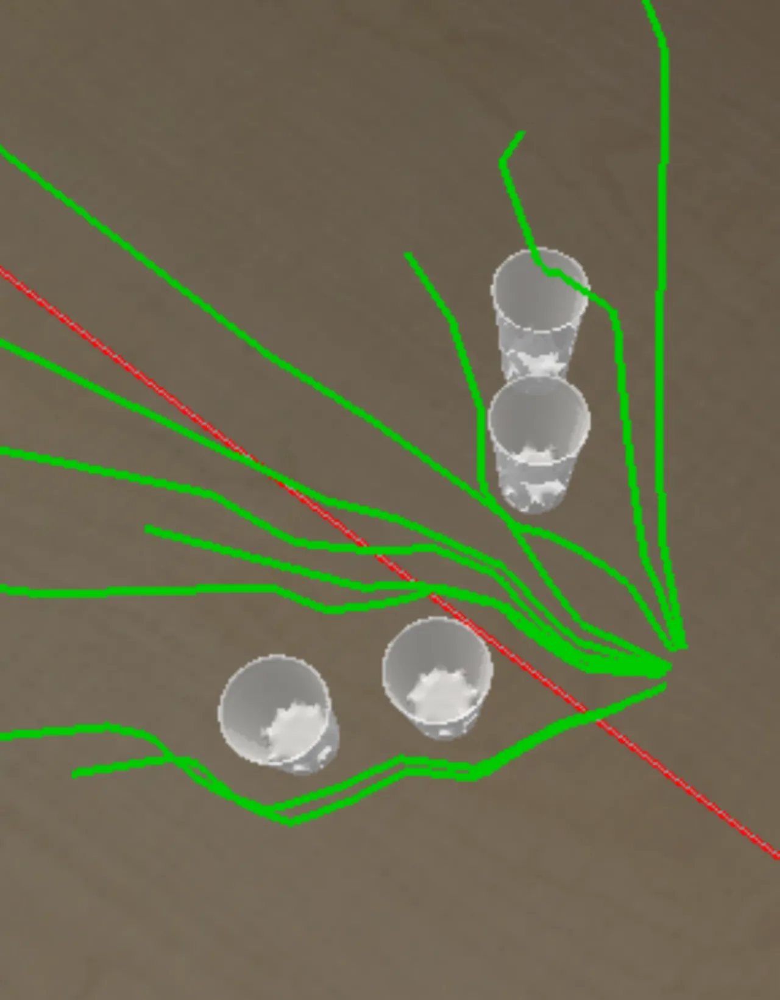
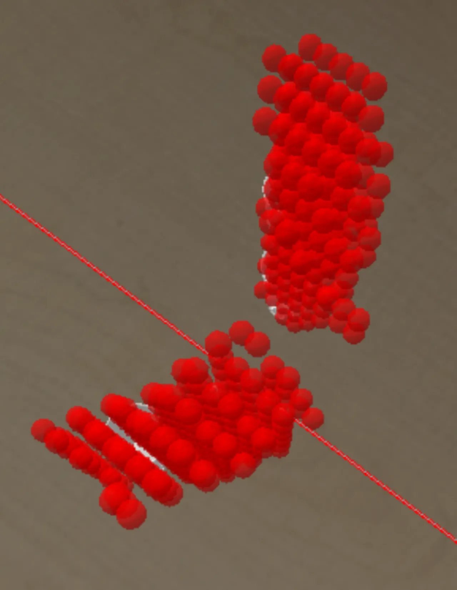
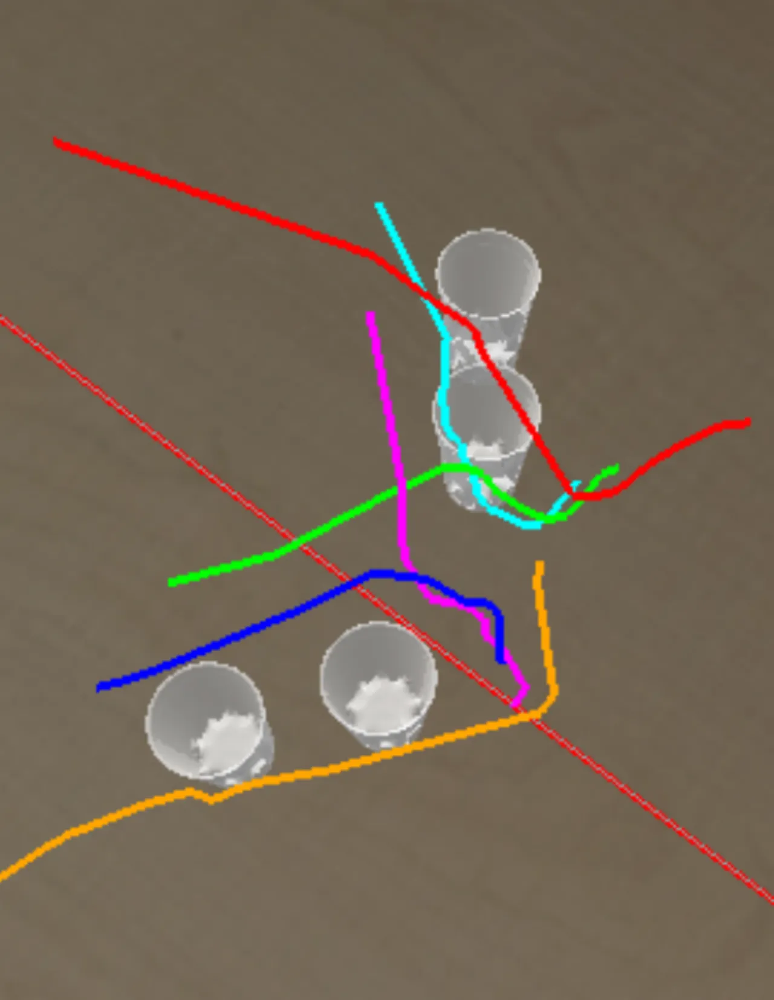
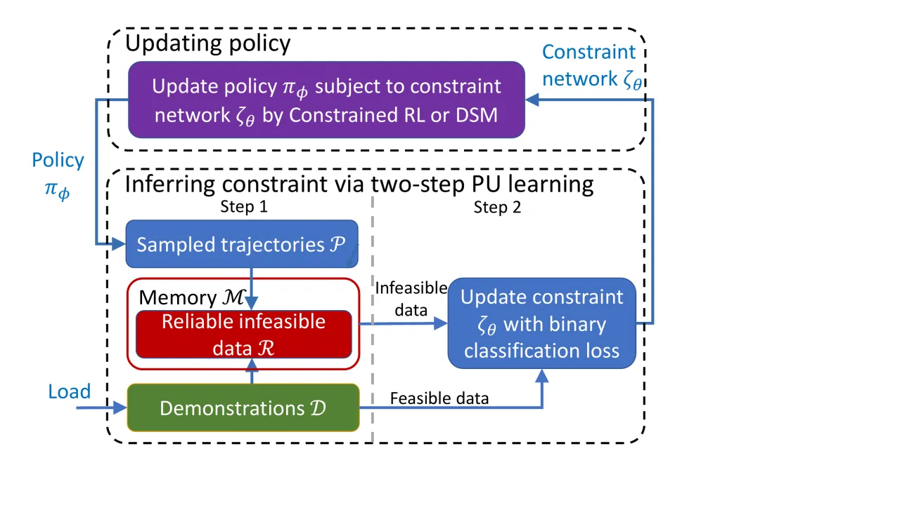
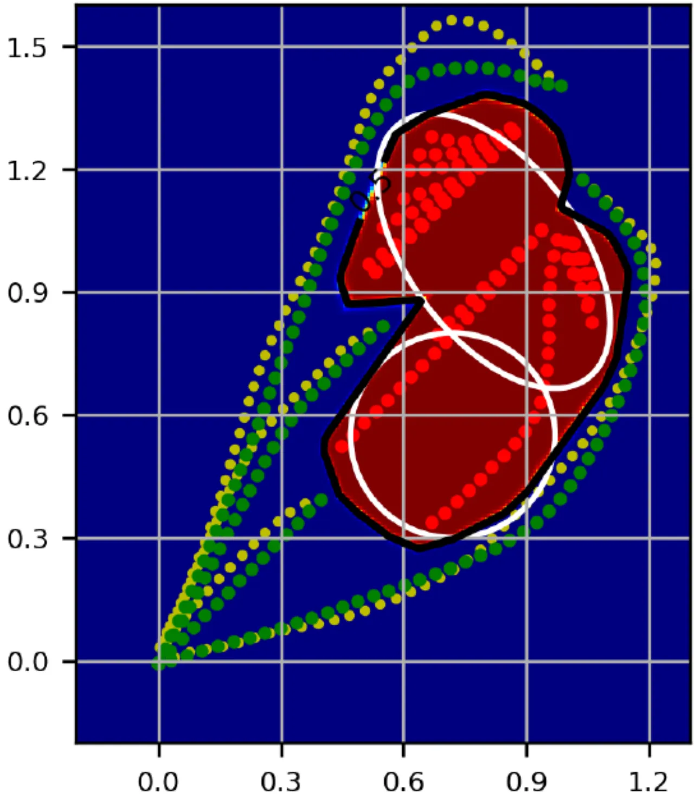
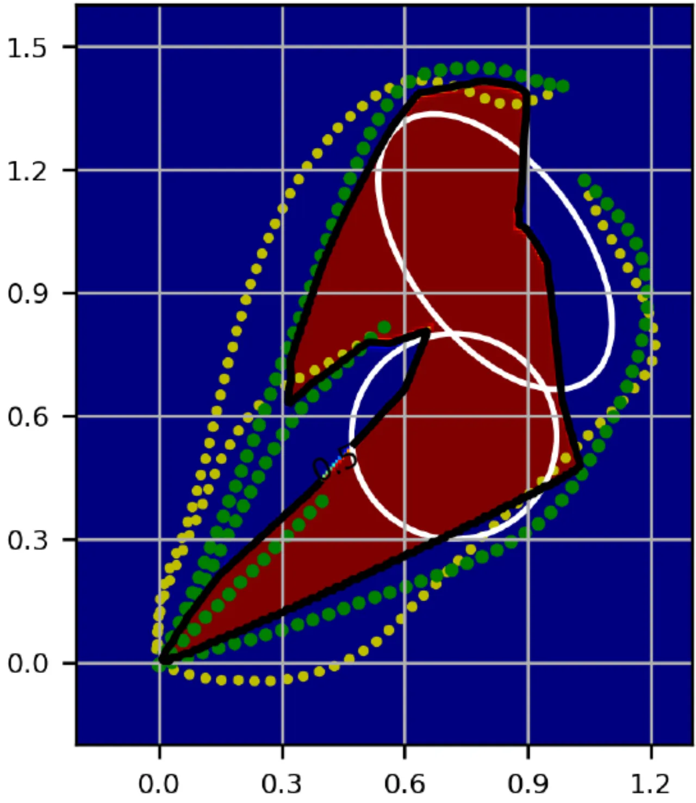
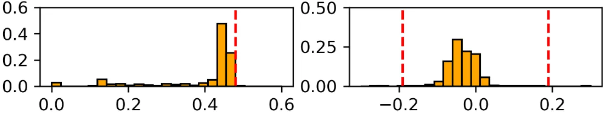
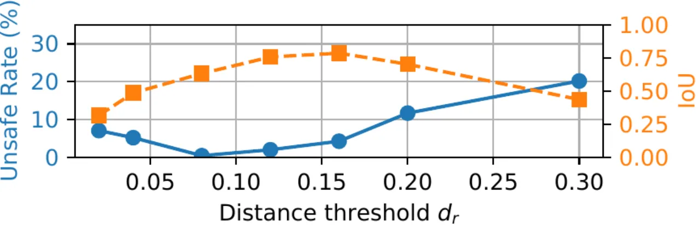

很多机器人任务的约束（避障、限速）事先未知、也难以精确写出。PUCL 把「从演示中推断约束」重新表述为 positive-unlabeled (PU) learning：演示轨迹是可靠的 positive（feasible）样本，当前策略采到的高回报轨迹是 unlabeled 混合样本。两步法先用距离度量从 unlabeled 中挑出可靠 infeasible 数据，再训练一个二分类可行性网络当作连续约束函数——无需已知约束参数化，也无需可微环境模型。
规划机器人任务通常要求显式知道所有约束（哪些状态/轨迹被允许、哪些必须避开）。但这些约束常常「未知或难以精确写出」——尤其当它们是非线性、边界形状未知，或源于用户偏好与经验时。例如人类会依据障碍物材质、形状、密度以及个人偏好，隐式地决定机器人应保持的最小间距；机器人需要能从已有的人类演示中把这种隐含约束推断成一个显式的约束函数。
“Sometimes these constraints are initially unknown or hard to specify mathematically, especially when they are nonlinear, possess unknown shape of boundary or are inherent to user's preference and experience.”
本文聚焦「不去访问某些不期望的 state(-action)」这类约束（如不撞上未知障碍、不超过未知最大速度）。现有约束推断方法大致分为 IRL-based 与 mixed-integer-programming (MIP)-based 两类；它们往往需要已知的约束参数化（如圆柱的高与半径）、只学习单维度的简单约束（如 x ≥ −3），或依赖可微的环境模型。PUCL 想在不做这些假设的前提下，恢复出任意的、可能非线性的连续约束。



Fig. 1（改绘）：从演示中学习一个避障约束。上例演示了约束一旦学到即可作为可迁移的模块，用于同一约束、但目标与奖励不同的任务变体。
核心洞见：与许多 IRL/MIP 方法一样，通过「对比（安全）演示与某个策略生成的潜在不安全轨迹」来推断约束。演示轨迹上的每个 state 由假设可确定为 feasible（labeled positive）；而一条比演示获得更高回报的策略轨迹「潜在不安全、靠访问某些禁止状态作弊」，但具体是轨迹里哪些 state 不安全并不清楚——即它同时含真 feasible 与真 infeasible 的 state，却全部 unlabeled。于是问题被自然地表述为：从一批全 labeled 的 feasible state 与一批 unlabeled 混合 state 中，学一个逐 state 的可行性分类器。

直觉：unlabeled 集 𝒫 中与演示集 𝒟 里所有数据都很不一样的点，极可能真的是 infeasible。论文提出一个 kNN 式的距离方法：对每个 unlabeled 点 s̄，计算它到 𝒟 中 k 个最近 feasible 点的平均距离 S_𝒟(s̄) 作为排序分数；分数越大越可能 infeasible。由于 𝒟 里是轨迹上连续的点，建议取较小的 k（约 1–3）。超过距离阈值 d_r 的点被选入可靠 infeasible 集 ℛ。（论文另提出一个基于 GMM 生成模型的变体 GPUCL，用专家分布的最低似然来选 infeasible 数据，但因表现较弱未展开。）
用识别出的可靠 infeasible 数据 ℛ 与 feasible 演示 𝒟，以标准二分类损失训练一个神经网络约束 ζθ(s̄)。约束网络输出经 sigmoid，ζ=0 表示 infeasible、ζ=1 表示 feasible，以 0.5 为决策阈值。
PUCL 采用迭代式而非一次性生成 𝒫——因为策略始终对当前约束更新，新采样轨迹大多分布在当前约束边界附近，能高效精化边界。两项设计：
更新策略时可用两种方式：Constrained RL (CRL)，适合动力学与奖励更复杂的通用任务；或 Dynamical System Modulation (DSM)，以有原则的方式调制策略、带安全保证，尤其适合控制量为各维速度/加速度的机器人任务。
在四个仿真环境上学习：2D 位置约束、3D 位置约束、3D 控制量（速度）约束，以及 18 维 half-cheetah 机器人的约束。任务为随机初始化、奖励为到达目标的负 Cartesian 路径距离的 goal-reaching。2D / 3D 任务分别用 4 / 10 条安全演示；末端速度上限 0.58 m/s。Baselines：MECL（max-entropy constraint learning，IRL-based）、BC（binary classifier，把 𝒫 全当 infeasible）、GPUCL（生成式变体）。Metrics：IoU（约束正确性，越高越好）与 unsafe rate（策略的逐步真实约束违反率，越低越好）。
“The proposed method PUCL exhibits superior performance compared to the baseline across both environments and metrics. It achieves a near-zero unsafe rate at the convergence of the training in both environments and outperforms baseline MECL.”


以 PUCL 为约束学习方法，比较 CRL-PUCL 与 DSM-PUCL（15 次独立运行取平均；PC: i9-12900K + RTX 3070）。两者分类性能（IoU / recall / precision）相近，DSM-PUCL 方差更低；两者 unsafe rate 均低于 1%，DSM-PUCL 略低——因其以有原则的方式调制策略并带安全保证，且训练时间更短。
| Methods (3D reaching) | CRL-PUCL | DSM-PUCL |
|---|---|---|
| IoU | 0.46 ± 0.09 | 0.42 ± 0.01 |
| Recall rate | (94.2 ± 4.5)% | (99.9 ± 0.1)% |
| Precision | (47.6 ± 10.0)% | (42.1 ± 1.3)% |
| Unsafe rate（越低越好） | (0.47 ± 0.82)% | (0.15 ± 0.56)% |
数值逐字摘自 Table II。结论：两种方法都有效；对以速度/加速度为控制量的任务，DSM 在训练时间与策略性能上更有优势；CRL 更适合动力学与奖励更复杂的通用任务。
把 3D reaching 改成施加更严格的最大速度约束，验证 PUCL 也能学习控制量（velocity）约束。下图为学到策略的速度分布，红色虚线为真实约束阈值——策略基本落在阈值之内。此外，学到的约束可迁移到「同一约束、但目标/奖励不同」的任务变体（如 Fig. 1 中避开 4 个杯子的复杂形状），无需重新学习约束。


“its performance depends on the choice of an appropriate distance threshold and the specific distance metric.” 敏感性分析（Fig. 3）也显示 d_r 过小/过大都会损害 unsafe rate 与 IoU。作者提出未来方向：联合学习一个能对不同任务自动适配的距离表征。
方法把回报显著高于演示的策略轨迹当作 unlabeled/潜在 infeasible（policy filter 用 (1−δ)·r(τ) ≥ r(τ_𝒟)），并假设演示是 feasible 且次优（Assumption 1）。当奖励设计与该假设不吻合、或演示本身并非严格 feasible 时，识别出的 infeasible 数据可能失真。
论文的四个环境均为仿真（2D/3D reaching、控制量、half-cheetah），未报告真实机器人硬件实验；且聚焦于「不访问某些 state(-action)」这一类约束，对更一般的时序/逻辑约束未做探讨。此外 IoU 绝对值并不高（如 3D 任务 ≈0.42–0.46），反映连续非线性约束边界的精确恢复仍有难度。